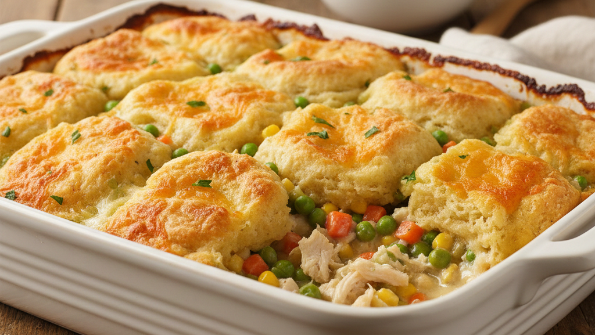

Chicken Cobbler
Developed by Forrest White & Cook Anything Kitchen
Ingredients
Base
- 1 stick unsalted butter, melted (poured into a 9×13-inch casserole dish)
- Shredded rotisserie chicken (enough to cover the bottom of the dish)
- 1 bag frozen mixed vegetables
- Seasonings
- 1 tsp salt
- 1 tsp black pepper
- 1 tsp garlic powder
- 1 tsp onion powder
- ½ tsp smoked paprika
- ½ tsp dried thyme
Biscuit Layer
- 2 cups milk
- 1 box Red Lobster Cheddar Bay Biscuit mix including the seasoning packet
Top Layer
- 2 cans chicken broth
- 1 can cream of chicken soup
Instructions
- Preheat the oven to 350°F (175°C).
- Pour the melted butter into the bottom of a 9×13-inch casserole dish, tilting the pan if needed so the bottom is fully coated.
- Spread the shredded rotisserie chicken evenly over the melted butter.
- Sprinkle the frozen mixed vegetables evenly over the chicken.
- Season the chicken and vegetables with your preferred seasonings (such as salt, pepper, garlic powder, onion powder, and paprika).
- In a mixing bowl, whisk together the milk, Cheddar Bay Biscuit mix, and the included seasoning packet until just combined.
- Pour the biscuit mixture evenly over the chicken and vegetables. Do not stir.
- In a separate bowl, whisk together the chicken broth and cream of chicken soup until smooth.
- Gently pour the broth and soup mixture over the biscuit layer, trying to cover the surface evenly. Do not mix.
- Bake, uncovered, at 350°F for 60–70 minutes, or until the top is golden brown and the center is set with a cobbler-like texture.
- Remove from the oven and let the cobbler rest for about 10 minutes before serving to allow it to finish thickening.
Notes
- Creamy Herb Blend: For a milder, creamier flavor profile, use a mix of garlic powder, dried parsley, dill, black pepper, and Italian seasoning. This pairs especially well with the biscuit topping.
- Southern Comfort Blend: Adds warm, cozy flavors with seasoned salt, garlic powder, black pepper, paprika, and poultry seasoning. Great if you enjoy a classic Southern-style chicken pot pie vibe.
- Cajun Kick: For a gentle heat, try Cajun seasoning with garlic powder, onion powder, smoked paprika, and a pinch of cayenne. This creates a savory, slightly spicy version without overpowering the dish.
- Chicken Pot Pie Inspired: Celery salt, thyme, sage, pepper, and garlic powder give the cobbler a traditional pot-pie flavor. Perfect if you want a nostalgic, cozy taste.
- You can swap frozen mixed vegetables for peas and carrots, a country blend, or even diced fresh vegetables.
- If the cobbler browns too quickly, tent loosely with foil during the final 10–15 minutes.
- Let the cobbler rest for at least 10 minutes to finish thickening before serving.
Nutritional Information
Serving Size: 1/8 of casserole
Calories: 410
Fat: 22 g
Carbohydrates: 32 g
Protein: 22 g